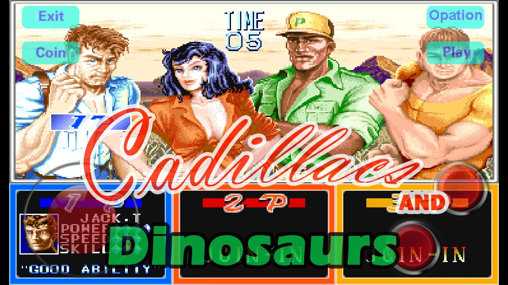
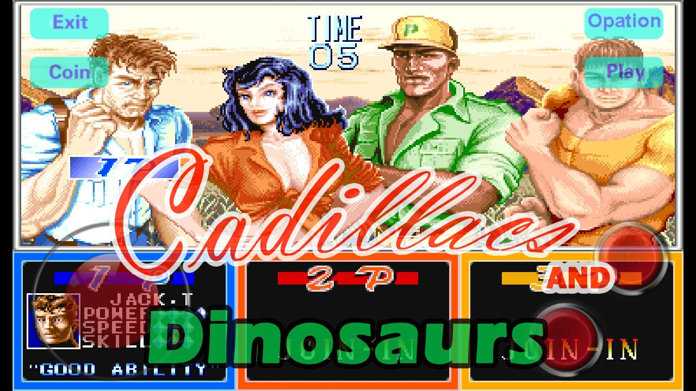
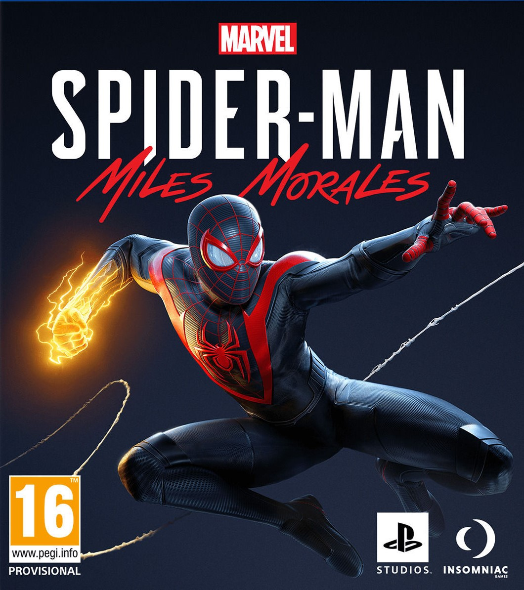
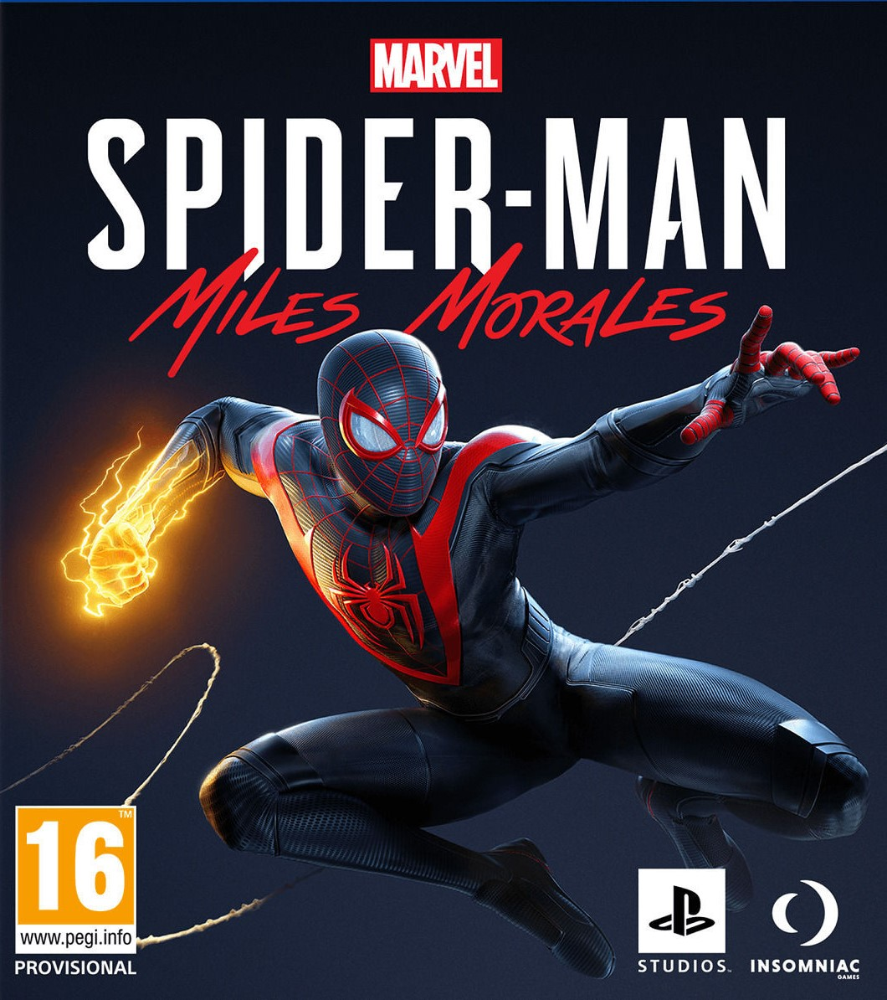

SuperMario
SuperMario
 Donkeykong
Donkeykong
Super Mario Es una serie de videojuegos de plataformas creados por la empresa desarrolladora Nintendo y protagonizados por su mascota, Mario. También conocida como la serie Super Mario Bros.El primer título de la serie, "Super Mario Bros." ,lanzado para el Nintendo Entertainment System (NES) en 1985, estableció conceptos y elementos de jugabilidad prevalecientes en casi todos los videojuegos de Super Mario
Donkey Kong es un personaje ficticio diseñado por Shigeru Miyamoto. Es un gorila y aparece en los videojuegos que pertenecen a las franquicias de videojuegos de Donkey Kong y Mario. Debido a su popularidad, ha aparecido en muchos videojuegos. Donkey Kong fue el primer oponente de Mario en el videojuego del mismo nombre, el videojuego de arcade de Nintendo Donkey Kong de 1981. Desde entonces, ha protagonizado su propia serie de videojuegos, comenzando con Donkey Kong Country en 1994 para Super Nintendo Entertainment System
 AC_Valhalla
AC_Valhalla
 Pacman
Cadillacs-Y-Dinosaurios
Pacman
Cadillacs-Y-Dinosaurios
Desde que Pac-Man fue lanzado el 21 de mayo de 1980, fue un éxito. Se convirtió en un fenómeno mundial en la industria de los videojuegos, llegó a tener el récord Guiness del videojuego de arcade más exitoso de todos los tiempos con un total de 293 822 máquinas vendidas desde 1981 hasta 1987 y acabó con el dominio de Space Invaders, donde la acción predominante era shoot 'em up (disparar a todos) para reemplazarla por un formato único, más humorístico y poco violento que gustó a muchísimas personas.
Conocido en Japón como(Cadillacs Kyouryuu Shin Seiki) es un videojuego arcade de 1992 editado por Capcom. Es un beat'em up basado en el cómic Xenozoic Tales creado por Mark Schultz durante los 80. Tras el juego se produjo una serie de televisión, aunque no tuvo demasiado éxito. Además el videojuego de Capcom no tiene ninguna relación con dicha serie ya que se basa enteramente en los cómics. La jugabilidad es similar a otros beat'em up de scroll lateral, como Streets Of Rage o Final Fight. Una característica de este juego es el frecuente uso de armas de fuego, raramente vistas en juegos de este tipo, en los que se suelen ver únicamente armas como granadas de fragmentacion o cuchillos.
 Cyberpunk-2077
Cyberpunk-2077
 World-Of-Warcraft
World-Of-Warcraft
 SpaceInvaders
SpaceInvaders
 StreetFighter
StreetFighter
Es un videojuego de arcade diseñado por Toshihiro Nishikado y lanzado al mercado en 1978. Space Invaders es uno de los primeros juegos matamarcianos. Es uno de los videojuegos más importantes de la historia. Su objetivo es eliminar oleadas de alienígenas con un cañón láser y obtener la mayor cantidad de puntos posible. Para el diseño del juego, Nishikado se inspiró en Breakout, La guerra de los mundos y Star Wars. Aunque es un juego simple para los estándares actuales, fue uno de los precursores de los videojuegos modernos y ayudó a expandir la industria del sector, desde una mera novedad a una industria global. Fue exitoso y popular desde su lanzamiento, tanto que existe una leyenda urbana que habla de una breve escasez de monedas de cien yenes en Japón.
 CallofDuty
Spiderman-miles-morales
CallofDuty
Spiderman-miles-morales